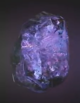
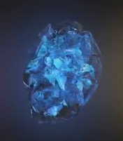

| Name |
Color |
Info |
Img |
| Камень силы |
Фиолетовый |
Сфера - это защитный корпус пурпурного камня бесконечности. Камень является источником невероятной силы, который, при использовании всего потенциала, содержит достаточно мощи, чтобы уничтожить целую планету. Этот камень искал Танос, который приказал Ронану Обвинителю найти его на мёртвой планете Мораг в обмен на уничтожение Ксандара. Вместо этого, камень нашёл Звёздный Лорд, который был готов вместе с Гаморой продать его Танелииру Тивану, до тех пор, пока его разрушительная сила не вырвалась в Знамогде. После этого Ронан получил сферу и, совладав её силой, намеревался уничтожить всё живое на Ксандаре, а после убить Таноса. Звёздный Лорд и Стражи Галактики смогли забрать у него камень и, вместе совладав с его силой, уничтожили Ронана. Они отдали камень на хранение Нове Прайм Ирани Раэль на Ксандаре. |
 |
| Камень пространства |
Синий |
Тессеракт назван так из-за своей кубической формы. Он способен предоставить доступ к любой точке во вселенной, если его использовать правильно. Уникальный элемент, из которого состоит тессеракт, был использован людьми для того, чтобы создать продвинутое вооружение. Камень сыграл ключевую роль в развитии человечества во время рассвета супергероев. Тессеракт привлёк внимание Красного Черепа и Таноса, которые хотели использовать силу камня в своих зловещих целях. Позже стало известно, что кубоид - это содержащая ячейка, находящаяся вокруг настоящего камня бесконечности, для безопасной работы и контроля. В видении Тора тессеракт разрушается, чтобы раскрыть камень пространства находящийся внутри. |
 |
| Камень времени |
Зеленый |
Глаз Агамотто - древний артефакт, подвеска, созданная Агамотто, первым верховным чародеем, предположительно для содержания и управления силой камня времени, находящегося внутри. После того как он хранился на пьедестале в Камар-Тадже неизвестный период времени, недавно он был использован Доктором Стивеном Стрэнджем, сначала, чтобы помочь ему в изучении волшебства, а потом и финальной битве против Кецилия и Дормамму. Когда он используется пользователем, обладающим достаточными знаниями и навыками, он, похоже, может контролировать течение времени, в малой или большой степени, обращать что-то в предыдущее состояние, ускорять время, чтобы произошли изменения, которые на самом деле ещё не произошли, или запереть во временной петле, перезапуская первоначальное состояние предмета, пока пользователь не остановит данный эффект. Похоже, что умелые чародеи или пользователи сил из тёмного измерения могут в какой-то степени противостоять эффекту камня, останавливая перемотку времени по отношению к себе или замечая, что он застрял во временной петле. Вонг и Мордо отметили, что использование Глаза противоречит естественному порядку вещей и чрезвычайно опасно. С одобрения Вонга он был помещён обратно на пьедестал, пока Стрэндж не научится правильным образом использовать его силу. |
 |
| Камень разума |
Желтый |
Скипетр был оружием, которое использовало жёлтый камень разума, хранящийся в синем компьютерном модуле, который также скрывал присутствие камня. Старк изначально считал камень источником энергии, однако, после того как у Д.Ж.А.Р.В.И.С.а появилась возможность изучить камень, он заявил, что он больше похож на очень мощный компьютер. Камень, находящийся внутри был во владении Таноса, который отдал его Локи, чтобы он помог ему в его вторжении на Землю. Камень может подавлять умы других, подчиняя их воле владельца, а также способен проецировать сознание пользователя на высший уровень существования. Также было сказано, что камень сильно увеличивает интеллект того, кто его носит, как в случае с Локи и Вольфгангом фон Штрукером. Когда кампания Локи провалилась, скипетр попал во владение Щ.И.Т.а и со временем перешёл к ГИДРЕ с помощью тайных агентов. Скипетр после этого был использован в различных экспериментах ГИДРЫ, и были раскрыты другие возможности, такие как: контроль разума, энергетическая и астральная проекция. Защитная оболочка была сломана Альтроном, и камень, содержащийся внутри, был использован, чтобы оживить Вижена. Тор доверил камень Вижену, заявив, что он достоин и, что безопасность трудно найти в наши дни. |
 |
| Камень реальности |
Красный |
В отличии от всех, ранее встреченных камней бесконечности, у которых содержащие ячейки - твёрдые, эфир выглядит как тёмная, красная и вязкая жидкость. Эфир ведёт себя как симбиот, способный впитаться в тело живого сосуда, даруя ему тем самым неимоверную мощь и силу, и судя по всему - неограниченные возможности. Малекит планировал использовать способность эфира искривлять реальность, чтобы накрыть все Девять миров тьмой, но был остановлен Тором и Джейн Фостер. Известны только два существа, ставших сосудами для эфира: Джейн Фостер и Малекит. Обстоятельства помешали потенциалу эфира раскрыться в полной мере. Позже было показано, что эфир является камнем бесконечности, содержащемся в жидкой форме. В видении Тора жидкость затвердевает и становится красным камнем бесконечности. |
 |
| Камень души |
Оранжевый |
Мало что известно о Камне души. Однако, согласно древним текстам Вонга, камень души может оказаться самой большой угрозой из всех камней бесконечности.[23] Гамора знала о местонахождении камня души, но скрывала это от Таноса. Однажды когда она была захвачена отцом, он отвел её к месту содержания в Вормире, где Камнехранитель сказал им, что камень может быть доступен только после того, как будет выплачена личная стоимость. Танос убивает свою дочь, а затем получает камень души и добавляет его к своей перчатке. |
 |